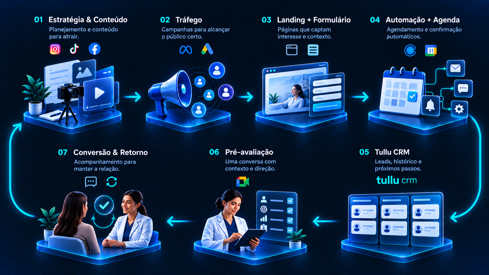

Marketing fragmentado
Conteúdo, tráfego e atendimento não conversam.
Tullu Clinic System
Estratégia, aquisição, atendimento, agendamento e relacionamento conectados em uma única jornada.
Da atenção ao agendamento. Do lead ao paciente.
Sua estrutura de crescimento
Uma mensagem que encontra o público certo.
Interesse e origem conectados desde o início.
Menos trocas de mensagens para confirmar.
A equipe começa a conversa com contexto.
Aprendizado para conteúdo, campanhas e retorno.
Construído para quem cuida.
01 / O ponto de partida
Conteúdo, tráfego e atendimento não conversam.
A pessoa chega e a equipe precisa descobrir tudo novamente.
Trocas de mensagens e oportunidades que esfriam.
O aprendizado dos atendimentos e retornos não chega à estratégia.
02 / A arquitetura do crescimento
Conectamos a aquisição ao que vem depois: atendimento, relacionamento, retorno e dados.

Oferta, pauta, roteiro, gravação e criativos.
Campanhas, públicos, testes e remarketing.
Captura estruturada de interesse e contexto.
Atendimento, agendamento e confirmação conectados.
Origem, interesse, status e histórico.
Informações organizadas antes da consulta.
Pós-atendimento, follow-up e ciclos de retorno.
Cuidamos da estrutura que atrai oportunidades e conecta atendimento, agenda e relacionamento. O prontuário, o ERP e os sistemas clínicos continuam com as ferramentas da sua operação.
03 / O que a Tullu instala
Mensagem, público, diferenciais e oferta.
Estratégia, conteúdo, Instagram, Meta Ads e presença local no Google.
Landing pages e formulários conectam interesse, origem e contexto.
WhatsApp, qualificação e CRM conectados, com contexto para a equipe.
Agendamento, confirmação e pré-avaliação para facilitar o próximo passo.
Pós-atendimento, satisfação, avaliações e indicação alimentam novos ciclos.
IA entra quando faz sentido: ajuda a responder dúvidas, qualificar e organizar informações. Automação quando ajuda. Pessoas quando importam.
04 / O sistema continua trabalhando
Depois que a oportunidade chega, a Tullu conecta atendimento, agendamento, relacionamento e dados para reduzir trabalho manual e ajudar cada oportunidade a avançar.
WhatsApp, qualificação e contexto trabalham juntos para facilitar a resposta. Quando uma pessoa precisa entrar, a conversa continua com contexto.
Automação quando ajuda. Pessoas quando importam.
Agendamento, confirmação, lembretes, reagendamento e lista de espera podem funcionar como partes do mesmo fluxo.
Menos atrito entre interesse e agenda.
Follow-up, pós-atendimento, reativação, avaliações e ciclos de retorno ajudam a transformar a base existente em novas oportunidades.
Cada atendimento pode alimentar o próximo ciclo.
Origem, agendamento, comparecimento e conversão em um painel de indicadores, com histórico no CRM para enxergar onde as oportunidades avançam — e onde ficam pelo caminho.
Decisão com contexto, não com achismo.
05 / Da construção à evolução
Entendemos a clínica, oferta, capacidade, canais e gargalos.
Conectamos aquisição, atendimento, agenda, relacionamento e CRM.
Ativamos campanhas e canais.
Os dados de origem, comparecimento, conversão e retorno orientam os próximos ajustes.
Tullu Academy
Um pilar permanente da Tullu para democratizar conhecimento e aproximar pequenos empreendedores brasileiros da tecnologia.
Conteúdo gratuito e permanente, para aprender e aplicar no dia a dia.
06 / Vamos conectar as etapas
Conte um pouco sobre sua clínica e o que precisa funcionar melhor agora.
Vamos entender seu momento e conversar sobre uma estrutura de captação, agendamento e relacionamento que faça sentido para a sua operação.
Seu próximo ciclo começa aqui
Sua clínica cuida das pessoas.
A Tullu conecta a jornada para atrair oportunidades, facilitar o atendimento e manter o relacionamento.